Mayon Volcano
World-renowned for its majestic, perfectly symmetrical cone shape standing 2,463 meters tall. Dominates the skyline of Legazpi City and offers unforgettable vistas, sunrise trails, and eco-adventure excursions.
Mayon Volcano, volcanic lava trail rides, fiery Bicolano cooking, and a seaside city built around all three.
The iconic volcanic, natural, historic, and religious centerpieces of Legazpi City.
World-renowned for its majestic, perfectly symmetrical cone shape standing 2,463 meters tall. Dominates the skyline of Legazpi City and offers unforgettable vistas, sunrise trails, and eco-adventure excursions.
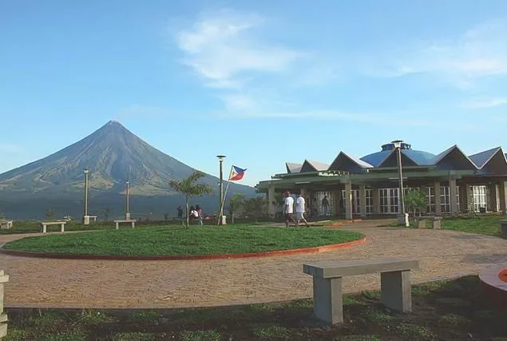
A 156-meter volcanic hill overlooking Legazpi City, Albay Gulf, and Mayon Volcano with historical WWII Japanese tunnels, ziplining, and trekking.
The Cathedral of St. Gregory the Great is the historic Episcopal Seat of the Roman Catholic Diocese of Legazpi in Old Albay District.
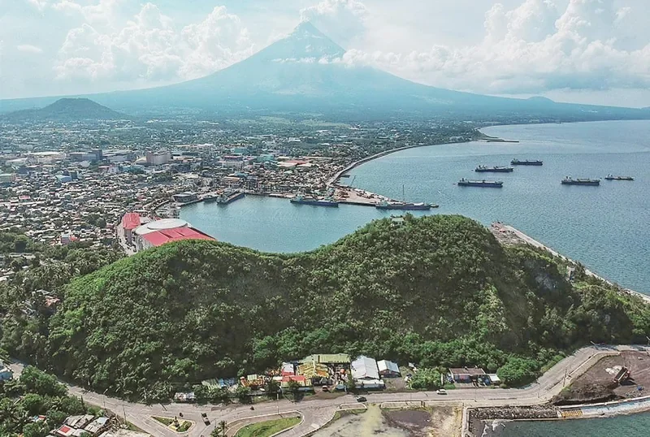
Scenic hill silhouette resembling a sleeping lion, offering sweeping panoramas of Legazpi Port, Albay Gulf, and Legazpi Boulevard.
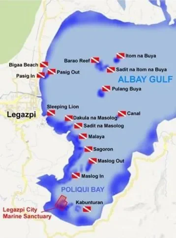
Vibrant coral reefs, sea turtle sanctuaries, and rich marine biodiversity spanning Albay Gulf with crystal-clear visibility.
Adrenaline-pumping volcano trail rides, volcanic rock climbs, aerial skywalks, and marine adventures.
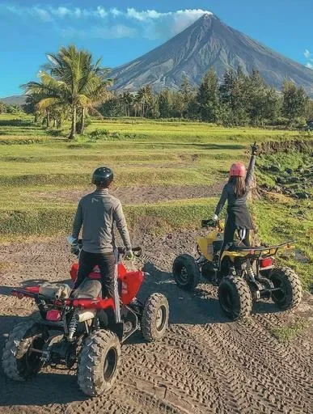
Drive an all-terrain vehicle through volcanic streams, rugged boulders, and pine slopes reaching the massive 2006 Black Lava Wall.
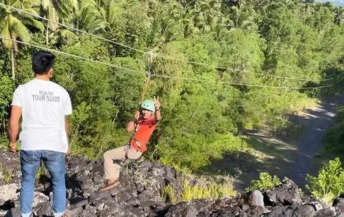
Climb the towering black basaltic volcanic lava wall for a front-row view of Mayon Volcano’s majestic summit.
High-speed aerial glide giving you panoramic views of the entire cityscape and the ocean waters of Albay Gulf.
Satisfy your taste buds with 9 legendary Bicolano dishes, spicy desserts, and innovative fusion delicacies.
World-famous creamy artisanal ice cream infused with local bird's eye chili, ranging from Level 1 to Volcano heat.
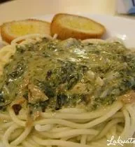
Decadent molten chocolate lava cake with a warm chili ganache core mimicking Mayon Volcano's glowing lava flow.
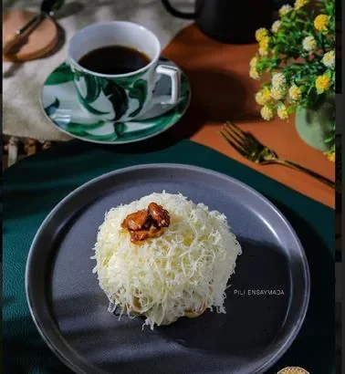
Creative Bicolano fusion pasta tossed in rich coconut milk cream and tender simmered taro leaf pinangat.
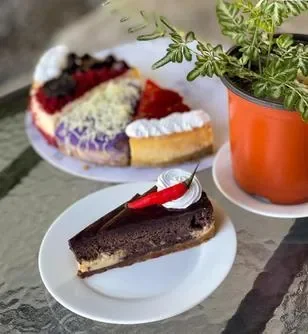
Classic Philippine shaved-ice refreshment crowned with fiery chili ice cream, sweet beans, and local fruits.
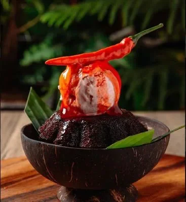
Fluffy golden artisan brioche brushed with butter, grated cheese, and crowned with roasted Albay pili nuts.
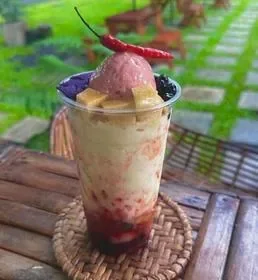
Authentic indigenous Bicolano vegetable medley slow-simmered in freshly pressed pure coconut milk.
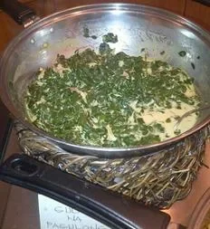
Silky baked cheesecake balancing sweet cream cheese with a subtle, lingering spicy Bicolano chili note.
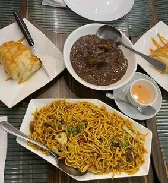
Time-honored Bicolano afternoon merienda pairing savory stir-fried noodles with rich savory dinuguan stew.
Artisan loaves, pastillas, and crispy glazed sweets prepared with buttery, nutrient-dense local pili nuts.
Don't leave the city without bringing home authentic handcrafted souvenirs, abaca textiles, and wellness goods.
Known as Philippine abaca silk, Pinukpok is an exquisite hand-pounded natural fabric used for high-end Barong Tagalog, heirloom bridal attire, and luxury textiles.
Harvested from Bicol's "Magic Tree", Pili is crafted into gourmet glazed sweets, mazapan, roasted snacks, as well as therapeutic cosmetic oils and organic wellness products.
Durable eco-friendly bags, decorative home accents, dining placemats, slippers, and Mayon memorabilia masterfully handwoven by native Bicolano craftsmen.
A world-class non-religious cultural festival that celebrates the ancient Bicolano epic of Ibalon. Every August, the streets come alive with theatrical street dancing, colorful mask pageantry, and musical dramas depicting mythical warriors overcoming primeval beasts.
• Legazpi Ibalong Run & Triathlon
• Legazpi Heritage Mural Painting: Ginikanang Bikolnon
• Ibalong Z: A Bikol Musical
• Mutya ng Ibalong Pageant
• Concierto Pasasalamat
...And many more!
Be welcomed with the heartfelt hospitality of every Legazpeño and the City Tourism Services Unit.
A core Filipino Brand of Service practice where hosts place a hand over the chest when welcoming visitors, expressing genuine warmth, sincerity, and pride in civic hospitality.
Proudly made Bicol ceremonial craft traditions where esteemed guests are draped with a handcrafted native woven Lei necklace and crowned with the ceremonial Putong headdress.
Browse full city directories with PSGC barangay search, contact numbers, and Google Maps links.